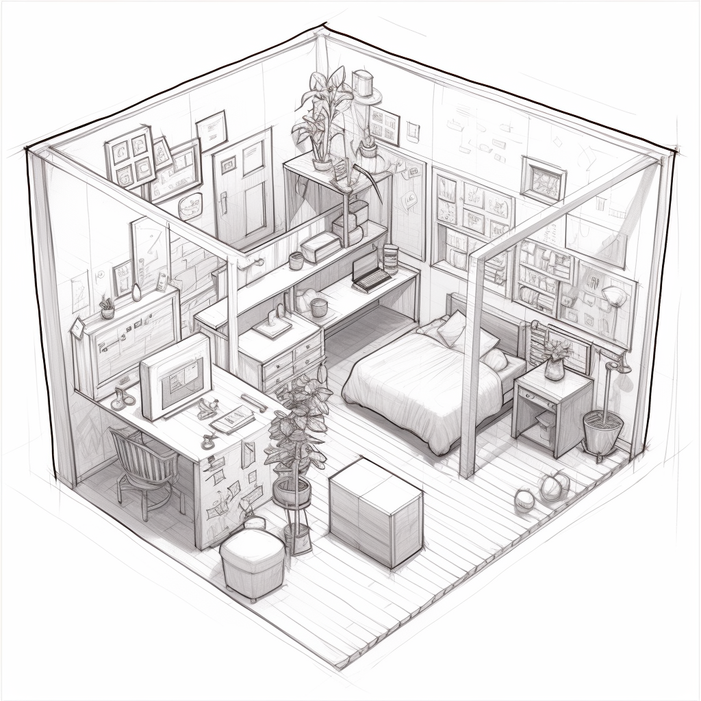
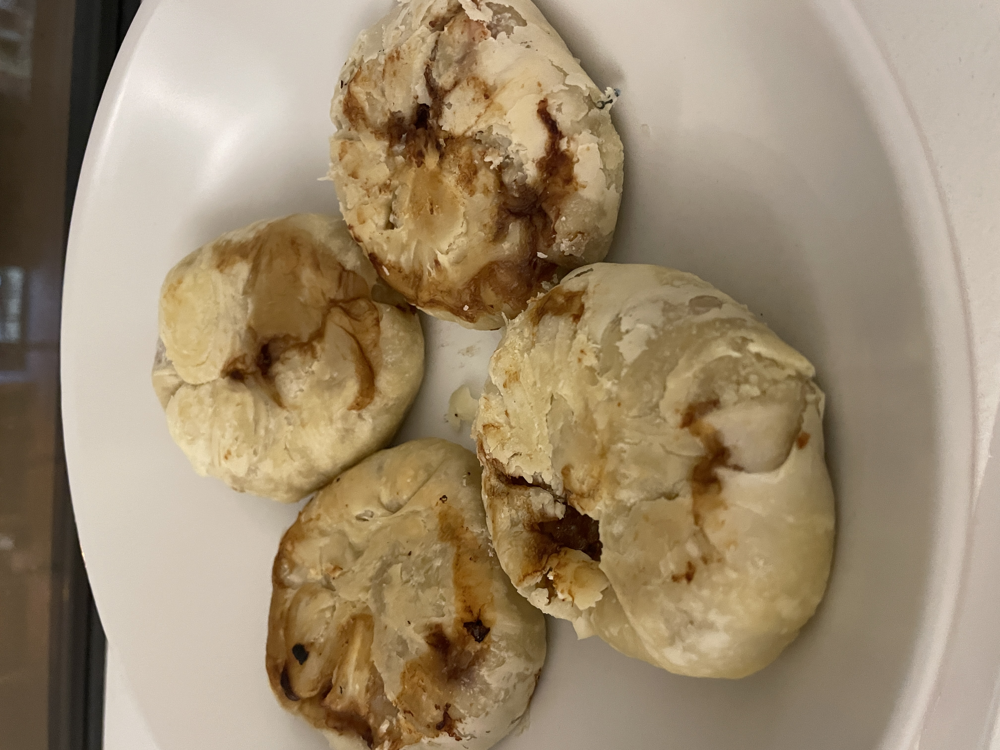

Ongoing Journey - September 2023
Birthday
Was in San Francisco this September, received a video from friends wishing happy birthday.
I felt very, very special, thank you Bill :)
Arguging with bots
ChatGPT has being my fellow debate partner recently. Whatever article I see, if I agree with it fully, I throw it to get a different point of view.
For example, Morgan hussel’s article on respect and admiratoin.
ChatGPT gave some counterarguments on what’s missed:
Material possessions may hold cultural significance and practical social benefits, represent personal freedom and self-expression, and symbolize hard-earned economic success and personal milestones. Here are the expanded counterarguments to the article's viewpoint:
Cultural and Social Considerations...…
University felt like a unified enviorment on thoughts, I tend to find myself agreeing with everything I encounter. Now starting a gap semester, in a city where new ideas (sometimes even conflicting) emerges every day, I still find myself doing the same, I felt a little pressured, doesn’t seem like I think when ideas comes, I simply let it pass through.
You will of course be wrong sometimes, but develop the confidence to stick with your convictions. It will let you be courageous when you’re right about something important that most people don’t see.
via Sam Altman.
Being late

Tilly and I booked an appointment third week of September at 12. 11:35 was our time to head off, tilly showed up 3 minutes late.
…
Being time sensitive as I am, I felt a bit anxious, walking back and forth at the front lobby. While walking though, I started to think, maybe it matters less on how much ‘late’ it is, but where the anexity comes from.
In the case of the appointment it was the Uber driver outside waiting for us, with the ‘your uber driving is leaving soon’ message I had the feeling of obligation to be there on time.
Realizing how much steak I have in the game helped with the anexity, especially when I rezlied the pressure wasn’t even mine to begin with.
Cooking, having someone to give suggestions
:)Given the living cost I’ve once again picked up cooking, and sometimes Tilly would come and grab a bite after she finishes working.
So far the most motivating response I got from her was
it taste better than it looks
…
Motivation aside, everytime after the taste test, Tilly would sit by the counter and give out suggestions , ‘less salt here, bring the heat down…’. Next time making it, she would notibly be happier, takes a few more spoonful, and suggest a few more, so on and so forth.
For every person who is good at something, there is someone else who was there to support and help improve, felt romantic thinking about it :)